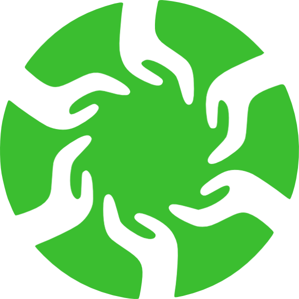

Estamos convecidxs de que las personas queremos, podemos y necesitamos auto-organizarnos en grupos que colaboren entre sí para satisfacer necesidades, resolver problemas, afrontar retos y realizar nuestras aspiraciones.
Hemos desarrollado una herramienta digital para conectar los inspiradores proyectos y procesos que diversas comunidades desarrollan hoy.
Queremos poner a su disponibilidad una plataforma de código libre que sirva para catalizar y facilitar los brotes de solidaridad y apoyo mutuo que vivimos en las calles, escuelas, casas, barrios, comunidades en línea, etc.
Pensamos que estos grupos floreceremos más prosperamente si estamos en constante encuentro, retroalimentación e intercambio. Aspiramos a tejer una red descentralizada de polinización colectiva para compartir espacios, tiempos, saberes, servicios, valores, sentires, recursos, voluntades, ideas y cuanto más podamos imaginar.
 Descubre y colabora con proyectos
Descubre y colabora con proyectos
 Registra tu proyecto y publica sus propuestas
Registra tu proyecto y publica sus propuestas
 Explora proyectos, sus necesidades y sus capacidades
Explora proyectos, sus necesidades y sus capacidades
 Encuentra proyectos cercanos e interactua con propuestas de todo tipo
Encuentra proyectos cercanos e interactua con propuestas de todo tipo
Somos gente que se organiza en grupos para transformar nuestro entorno, satisfacer nuestras necesidades y realizar nuestras aspiraciones
< App >Somos un equipo mixto y multidisciplinario que se encontró en la ciudad monstruo en el tiempo preciso con aspiraciones e ideales compartidos y que no pudieron evitar trabajar juntxs